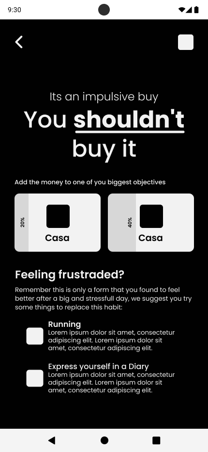
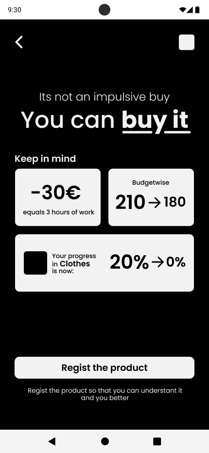
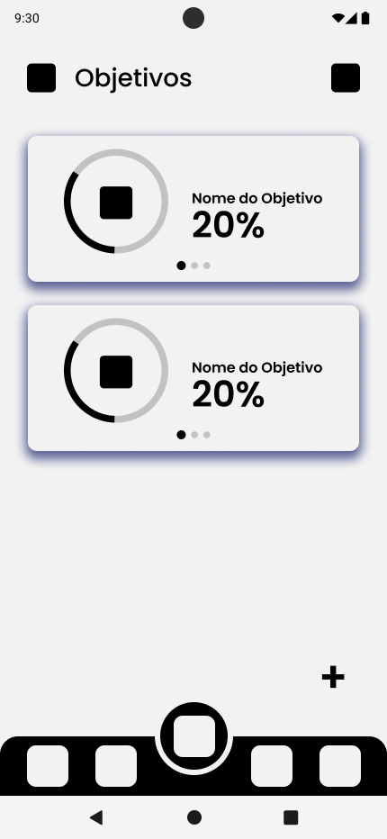
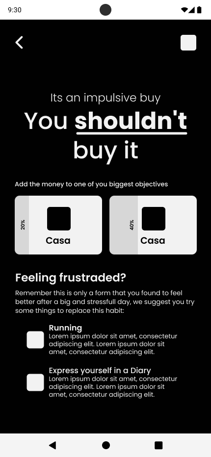
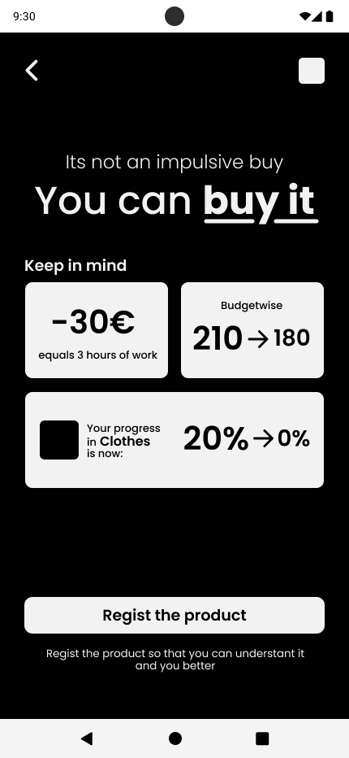
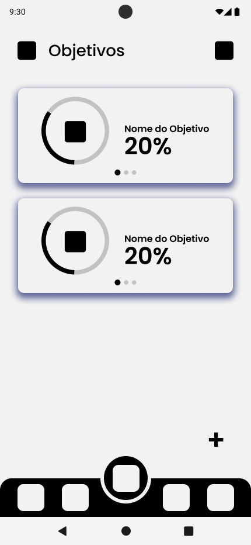
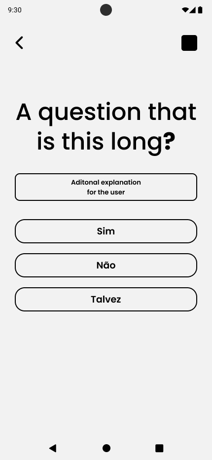
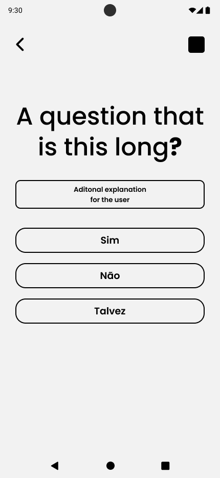
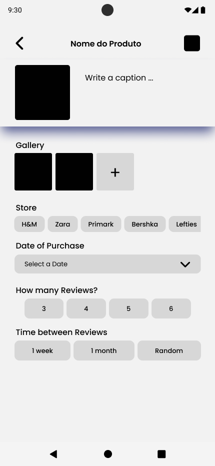
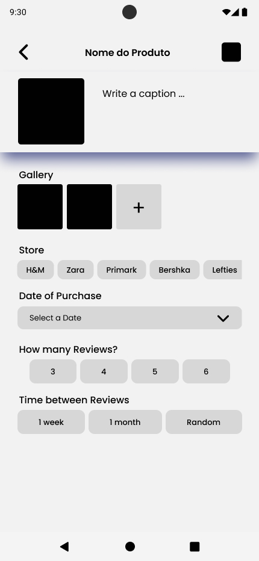

Resistoo - App Prototype
Living in a consumist society some may need help to make more concious choises, this is where Resistoo enters. An app designed to promote mindful spending by helping users curb impulsive purchases. Through reflective prompts and goal-setting tools, it encourages responsible consumption aligned with personal priorities, reducing unnecessary expenses and fostering long-term financial well-being.
Solo Project: Daniela Teodoro
Methodology: Topic Research | User and Tendencies Research | Persona | Wireframes | Flowcharts | Prototype | Presentation Video
Concept
The yellow cuts are inspired by the Japanese porcelain repair technique Kintsugi:
"is the art of repairing broken ceramics by patching up the broken areas with urushi lacquer sprinkled or mixed with gold, silver or platinum powder. Its philosophy treats breakage and repair as part of an object's history, not as something to disguise."
Naming
Resistoo, from the Portuguese "Resistir" and the English “Resist + too”, and was choosen as the app name, because it will help people to resist and reflect on their impulses.
Colors
Blue is often seen as a color that generates trust and reliability, while yellow is associated with optimism and accessibility.Together, they can create a sense of value and accessibility.
Research
Impulsive Buying
The Brain
- Emotional: initial attraction to the product;
- Prefrontal cortex: making the decision and controlling not to buy, logical part;
- Dopamine and Endorphins: the brain can interpret the purchase of the item as a moment of momentary pleasure, which justifies the impulse purchase.
Factors that contribute
- Emotional State
- Social Influence:Social pressure, social trends and the influence of friends and family can contribute;
- Marketing techniques: Retailers use various marketing tactics, such as limited-time offers, discounts, to get consumers to buy impulsively.
How to control it
- Create a budget: Set a budget and stick to it;
- Pause and reflect:Pause between the impulse to buy and the actual purchase;
- Identify emotional triggers: Recognize the emotions that lead to impulsive purchases and find alternative, healthier ways of dealing with these emotions.
“How can I stop?”
- Knowing how much you earn per hour and whether the product is worth the number of hours you've worked;
- Can you use that product as often as its price, is going to pay for itself;
- Redirecting the impulse: If a product interests you, it may actually be the topic and not the purchase.
Habit breaker apps
- This type of apps work buy showing the user the time that has passed since they started acting on breaking the habit;
- Setting goals and making the user see in a way that he is reaching them, make the person feel achieved;
- Tips to where the user can re-direct their energy.
Wireframes
 





 



 
